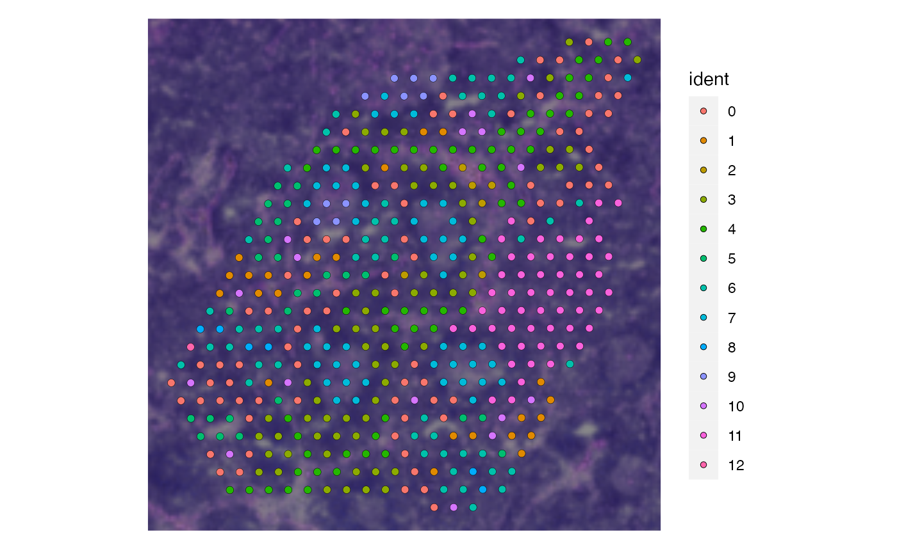
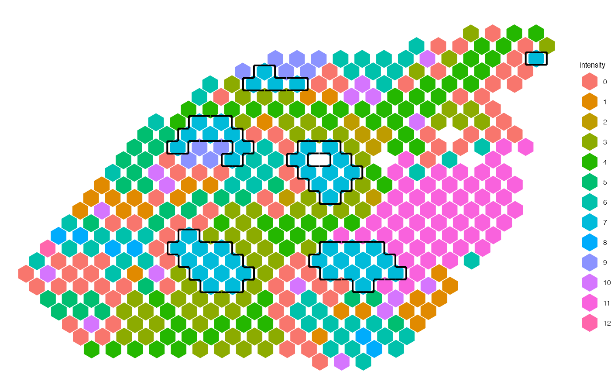
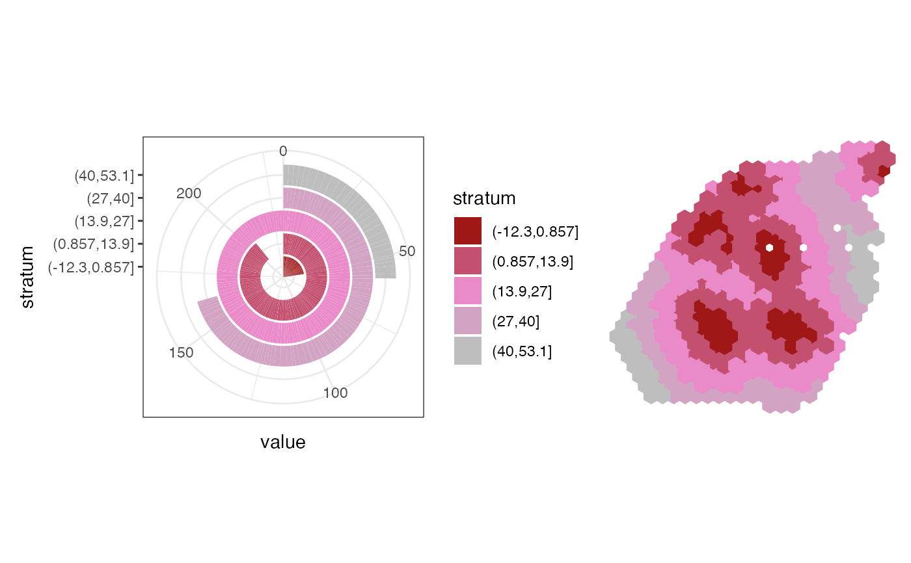

Display the results of stratify_seurat
plot_stratum(
seurat_obj = NULL,
gene_name = NULL,
metadata = NULL,
intensity_slot = c("data", "counts", "sct"),
colours_stratum = NULL,
polar = FALSE
)A Seurat object.
The name of the gene to plot.
Provide the name of a metadata that will be used instead of genes (i.e. from meta.data) slot of a seurat object.
The assay slot to use for the gene expression values. Must be one of "sct", "counts", or "data". Default is "sct".
A set of colors for the stratum.
Whter to use polar coordinates.
library(Seurat)
library(ggplot2 )
load_example_dataset("7870305/files/lymph_node_tiny_2")
#> |-- INFO : Dataset 7870305/files/lymph_node_tiny_2 was already loaded.
Seurat::SpatialDimPlot(lymph_node_tiny_2)

identity <- Idents(lymph_node_tiny_2)
classes <- ifelse(Idents(lymph_node_tiny_2) == 7, 1, 0)
names(classes) <- names(identity)
h <- display_hull(lymph_node_tiny_2, ident=classes, color="black", delta=1, size_x=3.4, size_y=3)
#> |-- INFO : Creating a dataframe to store output
#> |-- INFO : Creating a list of neighborhoods.
#> |-- INFO : Looping over the points.
plot_spatial(lymph_node_tiny_2, metadata = "seurat_clusters", pt_size = 6) + h
#> |-- INFO : Feature is a factor.
#> |-- INFO : Not enough colors supplied. Creating a ggplot-like palette

strats <- stratify_seurat(lymph_node_tiny_2, ident=classes,
colours_stratum = rev(discrete_palette(5, "De1")))
#> |-- INFO : Feature is a factor.
#> |-- INFO : Preparing diagnostic plot #1
#> |-- INFO : Feature is a factor.
#> |-- INFO : Not enough colors supplied. Creating a ggplot-like palette
#> Scale for fill is already present.
#> Adding another scale for fill, which will replace the existing scale.
#> |-- INFO : Preparing diagnostic plot #2
#> |-- INFO : Preparing diagnostic plot #3
p <- plot_stratum(strats[[1]], gene_name="CCL19", polar = TRUE,
colours_stratum = rev(discrete_palette(5, "De1")))
p + strats[[3]] + ggplot2::coord_equal() + Seurat::NoLegend()
